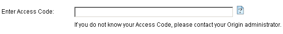

バージョン2016以前のマルチシート版
Multi-User-Node-Locked-Old-Lic
次のシリアル番号は、マルチシートライセンスです：
xFxxx-9xxx-76xxxxx, または
xFxxx-6xxx-76xxxxx.
シリアル番号が、
xxxxx-2xxx-79xxxxx, または
xxxxx-3xxx-79xxxxx,
ネットワーク同時起動版ですので、このページの情報は関係ありません。
マルチシート版は、契約ライセンス数に基づいて、その数のOriginをインストール、または、設置できます。それぞれのコンピュータは、OriginLabからライセンス認証する必要があり、ライセンスはコンピュータ指定になります。Originのライセンスのあるコンピュータを交換したい場合は、新しいコンピュータにライセンスを移行する前に、「ライセンスの取り外し」をする必要があります。
/Alert_icon.png) |
これらのライセンス案内はバージョン2016以前に対するものです。ライセンスのシステムはバージョン2017から更新されました。Origin2017以降のバージョンをご利用頂いている場合は、こちらのページをご覧ください。
|
Originをユーザに展開する前に.
マルチユーザのパッケージには、ライセンスを取得できるWEBメンバーシップアカウントを制限できる仕組みがあります。この仕組みは、シリアル番号の不正利用を防ぎ、あなたの所属する会社や研究室のユーザがライセンスを取得できるように確保することを目的としています。
OriginLabのWEBサイトでライセンスアクセス制限をかけるには
Originの管理者は、以下の手順に沿ってシリアル番号を登録し、シリアル番号に対するライセンスアクセス制限を設定します。この処理は、Originが使えるようになったとユーザに周知する前に完了してください。
/Video_Image_2016.png) 次のビデオチュートリアルをご覧ください - Getting Started with the Multi-user Node Locked Package
次のビデオチュートリアルをご覧ください - Getting Started with the Multi-user Node Locked Package
- シリアル番号とアクセスコードを準備します。Originのパッケージと一緒にライセンス証書が発行されています。
- http://www.originlab.com/にアクセスします。
- 「サポート」メニューの下にある「Originのライセンス/登録」リンクをクリックします。
- 既にWebメンバーシップアカウントを持っている場合はログインします。アカウントがなければ作成してください。
- 過去に登録したシリアル番号がある場合は、「Origin製品の登録」ページが表示されます。続いて、「新しいシリアル番号を登録する」ボタンをクリックします。
- 「Originを登録し、また、コンピュータに入れるべきライセンスファイルを取得したい」ラジオボタンを選び、次へ進むボタンをクリックします。
- バージョンとシリアル番号を入力し、次へ進むをクリックします。
- アクセスコードの入力画面に移るので、アクセスコードと、メールアドレス（またはメールアドレスの一部）を入力してください。ここまで終わったら、必要に応じてメールアドレスやメールアドレスの一部を追加で入力できます。（ステップ9を参照）
- 自分のみがライセンスを取得できるように制限したい場合は、現在のアカウントに登録しているメールアドレス全体を入力します。
- 許可したユーザもライセンスを取得できるようにしたい場合は、まずは自分のアカウントのメールアドレスを入力します。終わったら、「許可した」ユーザのメールアドレスを全て入力します。（以下のステップを参照してください。）ユーザがライセンス取得をしようとする前であれば、管理者はいつでもOriginLabのWEBサイトに戻ってメールアドレスの追加ができます。
- 組織のメンバーのみに、ライセンスアクセスを制限したい場合には、組織に特有のemailアドレスフラグメンツを入力します。
/AccessCodeEmailFrag.png)
- 一つ目のメールアドレスの入力が終わった後、追加のメールアドレスを入力する際は、
- OriginLabのWebサイトの右上にある、あなたのログイン名をクリックします。（Webサイトに戻って、まだログインしていない場合には、ログインをクリックします）
- 続いて、「Welcome」ページで「ライセンスアクセス制限」をクリックします。
- 開いたページの案内に沿って、メールアドレスまたはアドレスの一部を追加します。
| Note:
メンテナンス期間中は、Originを常に最新の状態にアップグレードできます。ライセンス管理者は、リリース後すぐに新しいバージョンを登録し、ライセンスアクセス制限を設定することをお勧めします。設定が完了しましたら、他の準備出来次第ユーザに展開することが出来ます。
|
Originパッケージをユーザに配布するには
Originをユーザに配布する時、インストーラーとシリアル番号と共にアクセスコード（Access Code）を提供してください。このコードはライセンス取得時に使用されます。また、ライセンス認証をする時はOriginLabのWEBサイトにログインする必要があることをユーザに説明し、アカウントを持っていないようなら作成するように伝えてください。OriginLabのWebサイトに参加する場合には、メールアドレスを含んだ組織のコンタクト情報を入力するようにユーザに伝えます。
すでにアカウントを持っているが、（Gmail等を使っており）所属している組織が発行したメールアドレスを登録していない場合、まずアカウントをアップデートし、所属組織の情報に変更するよう説明してください。WEBサイトにログイン後、ユーザプロファイルの表示/更新リンクをクリックしてアカウントのアップデートを行う必要があります。
複数のユーザがいる場所での展開
Originをユーザに展開する方法はいくつかあります。
マルチシートライセンスのアクティブ化
重要事項
- マルチシートライセンスで処理を行う場合、必ず管理者権限でコンピュータにログインしてください。
- Windows 10, 8.1, 8, 7 およびVistaでOriginを管理者として実行するには、Originのプログラムアイコンを右クリックして、「管理者として実行」を選びます。
- 一度処理が終わるとライセンスはコンピュータに保存されるので、それ以降はインターネット接続は必要ありません。
コンピュータがインターネットに接続されている場合
ビデオチュートリアル - インターネット接続があるコンピュータでライセンスを取得
- Originを起動します。ダイアログが開き、ライセンスを取得する方法がいくつか選択できるようになっています。
- 一番目の選択肢、このコンピュータはインターネットに接続されており、オンラインでライセンスファイルをただ今、取得しますを選択します。OKをクリックします。
- コンピュータ情報ダイアログが開きます。ここに表示されるコンピュータ情報はOriginLabのWEBサイトに反映されます。OKをクリックします。
- ウェブブラウザが開き、OriginLabのWEBサイトにログインする画面が表示されます。既にWebメンバーシップを持っている場合はログインします。必要な場合はアカウントを作成してください。
- ログインをしたら、アクセスコードを入力するよう求められます。アクセスコードが分からない場合はOriginを管理している方にお尋ねください。進むをクリックします。
- 
- ライセンスファイルが作成され、WEBページ上に表示されます。ライセンステキストを全てコピーします。
- Originに戻り、ライセンス入力ダイアログにライセンステキストを貼り付けたら、OKをクリックします。
コンピュータがインターネットに接続されていない場合
ビデオチュートリアル - インターネット接続がないコンピュータでライセンスを取得
実際にOriginを使用するコンピュータがインターネットに接続されていない場合でも、インターネットに接続できる別のコンピュータは必ず必要になります。このインターネット接続のあるコンピュータで、ライセンスを取得します。処理を行うには、インターネット接続がないコンピュータのコンピュータID、許可コード、シリアル番号が必須です。
- Originのライセンスダイアログで、「ライセンスファイルを今すぐ取得」を選択します。別のPCを使ってライセンスファイルをいますぐ取得したいです」を選択してOKをクリックします。
/GetStarted3.png)
- ダイアログが開き、シリアル番号、コンピュータ名、コンピュータID、許可コードを表示します。メモ帳エディタに出力をクリックして、これらの情報をテキストファイルに保存します。
/Computer_details.png)
- インターネットに接続できるコンピュータでwww.originlab.comにアクセスします。
- サポートメニューの下にある「Originのライセンス/登録」リンクをクリックします。
- 既にWebメンバーシップを持っている場合はログインします。必要な場合はアカウントを作成してください。
- もし、あなたのアカウントでシリアル番号の登録/ライセンス取得を行うのが、今回初めてならば
- ログイン後のページで「Originを登録し、また、コンピュータに入れるべきライセンスファイルを取得したい」を選択して「次に進む」をクリックします。
- シリアル番号とバージョンを入力して次に進むをクリックします。
- 次に、アクセスコードを入力するよう求められるはずです。アクセスコードが分からない場合はOriginを管理している方にお尋ねください。
- OriginのコンピュータID、コンピュータ名、アクセスコードを入力し、「登録」をクリックします。
- ライセンスファイルが作成され、WEBページ上に表示されます。ライセンステキストを全てコピーします。
- メモ帳等のテキストエディタを開き、ライセンステキストを貼り付けます。テキストファイルをフラッシュドライブやディスクに保存します。
- Originをインストールしたコンピュータに戻ります。メインのライセンスダイアログを開く必要がありますので、コンピュータ情報のダイアログがまだ開いていましたら、「戻る」ボタンをクリックしてください。
- メインのライセンスダイアログで、「すでにライセンスファイルを取得済みです次に何をすればいいのですか？」を選択しOKをクリックします。
- ライセンス入力ダイアログに、ライセンステキストを貼り付けたら、OKをクリックします。
既に登録済、またはアカウントにライセンス済のOriginがある場合 は、ログイン後にOriginの製品登録Webページをご覧になれます。
- 一覧の中にないシリアル番号について、ライセンスを取得するには
- 「"新しいシリアル番号を登録する」をクリックします。
- 『Originを登録し、また、コンピュータに入れるべきライセンスファイルを取得したい』ラジオボタンを選び、「次へ進む」ボタンを押します
- シリアル番号とバージョンを入力して次に進むをクリックします。
- 前のセクションのステップ3を行います。
- すでにOriginを使っていて、アップグレードをする場合など、ライセンスを取得したいバージョンが一覧に表示されていない場合は以下のようにします。
- 「新しいシリアル番号を登録する」をクリックします。
- 『Originを登録し、また、コンピュータに入れるべきライセンスファイルを取得したい』ラジオボタンを選び、「次へ進む」ボタンを押します
- シリアル番号とバージョンを入力して次に進むをクリックします。
- 前のセクションのステップ3を行います。
- すでにライセンス一覧に表示されているシリアル番号/バージョンのライセンスを取得するには、以下のようにします。
- 一覧の中の該当するシリアル番号/バージョンをクリックします。
- 「ライセンス要求履歴」のページが開いたら、表の上にある「新しいコンピュータ用のライセンスを取得する」ボタンをクリックします。
- 前のセクションのステップ4を行います。
管理者が他のユーザ用にライセンスを取得する
マルチシートノードロックパッケージの管理者の場合は、ユーザ自身でOriginライセンスの取得を取得できます。または、ライセンス取得のプロセスを管理者で行うことが出来ます。もし一括して全てのユーザのライセンスを管理するなら、ユーザのコンピュータ上でライセンスダイアログを直接操作するか、コンピュータ情報を連絡してもらった上で自分のコンピュータを使って手続きしてください。どちらの場合も、先に説明した手順に沿って操作してください。
関連項目
よくある質問
マルチシートライセンスの取り外し
Originのライセンスを別のコンピュータに移したい場合、元のコンピュータからライセンスを取り外して新しいコンピュータにライセンスを入れる必要があります。元のコンピュータにアクセスできない場合は、OriginlLabのWebページから、システムの移行リクエストを行ってください。
Originをコンピュータで、まだ実行できる場合：
ライセンスの取り外し-ビデオチュートリアルをご覧ください。
コンピュータがインターネットに接続されている場合
- 管理者権限を持つアカウントでWindowsにログインする
- Originのアイコンの上で右クリックして、「管理者として実行」を選択して、管理者としてOriginを起動します。
- ヘルプ：ライセンスの取り外しを選択します。
- ステップ1でオンライン処理を選択して、今すぐ接続をクリックします。
- OriginLabのウェブサイトが開きます。ログインしてライセンス除去コード (DC)をクリックします。
- DCをコピーして、Originにあるステップ2でDCを貼り付けます。
- Originのライセンス除去ボタンをクリックします。これでコンピュータからOriginが取り外されました。OriginLabウェブサイトに情報が送られ、新しいライセンスファイルが届きます。
コンピュータがインターネットに接続されていない場合
- Originを起動します（Windows Vista、Windows7では、Originのプログラムアイコンを右クリックして、「管理者として実行」を選び起動します）。
- メインメニューのヘルプをクリックし、ライセンスの取り外しを選択します。
- ステップ1でオフライン処理を選択します。
- インターネットにつながったコンピュータで、http://www.originlab.com/reginfoに行き、ログインします。
- ライセンスのあるコンピュータを見つけて、削除しているシリアルナンバーをクリックします。
- ライセンスを取り外し、または、ライセンスを移行リンクをクリックすると、ライセンス除去コード(DC)が発行されます。
- DCをメモして、インターネットに接続していないコンピュータに戻ります。DCをOriginに入力すると、ライセンス取り外し認証番号 (DCN)が発行されます。
- DCNをメモして、ライセンスの取り外しのウェブページに戻ります。このページのステップ3に戻り、DCNを入力します。
完了のメッセージが出たら、ライセンスが再利用のために発行されます。OriginLabのWebページでDCNを入力しないと、ライセンスは発行されません。
Originをコンピュータで実行できない場合：
OriginlLabのWebページで、システムの移行リクエストを行う必要があります。
- http://www.originlab.com/reginfo に移動して、ログインしてください。
- ライセンスのあるコンピュータを見つけて、削除しているシリアルナンバーをクリックします。
- 「ライセンスを取り外し」または「ライセンスを移行」のリンクをどちらかクリックします。
- ステップ3のNoteで、システム移行の送信フォームリンクをクリックして、フォームを送信してください。
よくある質問
メンテナンスを更新した後、マルチシートライセンスをアップデートするには
メンテナンスが更新されたら、以下のようにして新しいFLEXnetサーバーライセンスを取得してください。
- 管理者権限のあるアカウントでコンピュータにログインします。
- Originのアイコンを右クリックし、「管理者として実行」を選択してOriginを起動します。
- ヘルプ：バージョン情報を選択します。
- バージョン情報ダイアログで、ライセンスボタンをクリックします。
- ライセンス状態ダイアログで、ライセンスボタンをクリックします。
- ダイアログが開くので、以前にOriginをアクティベートした時と同じ要領でライセンスファイルを取得します。
- OriginLabのWEBサイトに表示されたライセンスファイルをコピーしたら、ライセンス入力ダイアログに貼り付け、処理を完了させます。ヘルプ：バージョン情報を選択し、メンテナンス期間がアップデートされたことを確認してください。
| Note:
メンテナンス期間中は、Originを常に最新の状態にアップグレードできます。複数ユーザが利用するライセンスの管理者は、新バージョンがリリースされ次第登録を行い、他のユーザに知らせるとよいでしょう。
|